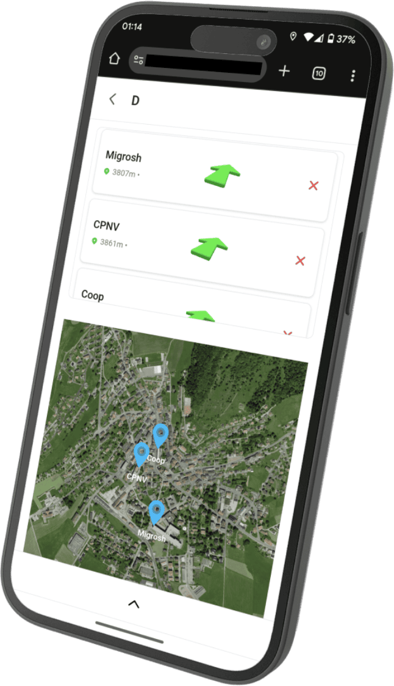

In order
to
Build
Develop
Impact
Change
Design
Build
the future
at a time.
The Problem
Every summer, thousands of villages across drought-prone regions of India face severe water shortages."The current system is manual, reactive, and inefficient.Village officials call for help.District offices receive hundreds of complaints daily.Tankers are dispatched based on pressure — not real need.There is no predictive intelligence, no transparent allocation, and no accountability tracking.JalRakshak was built to change this."

Reaching my teenage years
I left my parents' home to live in the mountains and start an apprenticeship in computer science. There, I learned systems, networking, and the basics of software development. After my apprenticeship, I pursued advanced studies in development, mastering key areas of software engineering and team management, and most importantly, I became ready to take on any challenge.
The Impact
I'm proud of the journey I've taken so far, but my eyes are still on tomorrow. I keep learning in specific fields to satisfy my curiosity, I continuously improve my home lab, and I often dive into ambitious projects. I'm passionate, and since every project and every great story begins with an idea, feel free to reach out. I'd love to hear from you!

00-01
Game Engine
Sprunk-engine is an open-source web game engine (available on npm) that I developed with some friends. We wanted a challenging, architecture-focused project, so we built a game engine with almost no external libraries. It lets developers create 2D browser games, and we made two demo games available on the official website. I worked on our custom math library, the 2D physics engine, and I’m now developing a new 3D physics engine. This project helped me deepen my understanding of algorithms, optimization, mathematics, and open-source collaboration.

00-02
Find your tribe

Find your tribe is a small project inspired by a music festival I attended abroad with friends. With over 60,000 people per day, it was nearly impossible to find each other once the group split up due to the crowd, noise, and lack of landmarks. The app solves this by letting users create groups to chat, see each other’s live locations, set and share map landmarks, and use 3D arrows powered by the phone’s gyroscope to point directly to their friends in real time. The 3D arrow feature is built using my modular “game engine” project.
00-03
Portfolio
The portfolio project is the website you’re on right now. While many of my projects focus on architecture, algorithms, and data science, I’ve always had a strong passion for frontend development. I’ve long dreamed of becoming a “Creative Developer,” and I regularly explore awwwards.com for inspiration and to study the techniques behind advanced visual effects. This portfolio is both a way to present my work and a way to stay true to that ambition. If you have any suggestions or feedback, feel free to reach out!
00-04
SeaCracker
SeaCracker is another open-source project I built with the same team as the game engine, a few months earlier. We wanted to explore design patterns and web app architecture, so we created a Kahoot-like platform where users can build quizzes and play them in live sessions. The host presents each question, while players join with their phones and submit answers like a remote control. A leaderboard is shown between questions to keep things engaging. This project introduced me to state machines, event-driven architecture, and gave me my first real experience with WebSockets.

Best diploma project
At the end of my higher education in application development, I received the cantonal award for the best final project. This project, combining development and cybersecurity, involved securing confidential data within a production software.
Solidarity and comradeship
The year I completed my compulsory schooling, my teachers and the school administration agreed to create a special award for me, recognizing my social skills and my commitment to supporting classmates through academic difficulties.
Cyprien stood out for his professionalism, analytical mindset, and impressive learning agility. He consistently demonstrated autonomy, curiosity, and precision in his work. His reliability, enthusiasm, and drive for excellence make him a true asset in any collaboration. I can confidently recommend him to anyone seeking a skilled, motivated, and forward-thinking professional.

Working with Cyprien was an excellent experience. He quickly understood our goals, aligned perfectly with the team, and brought valuable technical insight and structure to our workflow. His proactive mindset, clarity in communication, and ability to turn ideas into tangible results made a lasting impact. Cyprien is someone you can trust to deliver, both technically and creatively.

Cyprien approached every collaboration with professionalism, motivation, and genuine team spirit. His adaptability and reliability made him a pleasure to work with, and his commitment to quality was evident in everything he delivered. Highly dedicated and always eager to contribute, he consistently exceeded expectations and brought a positive energy to every project.


Social
Open source
Let's work
together